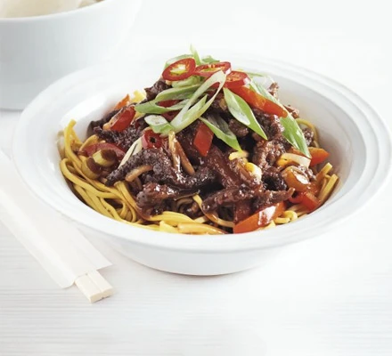

Sticky Beef

Time
- Prep Time 25 mins
- Cook Time 15 mins
- Total Time 40 mins
Servings
3
Ingredients
- 350g thin-cut minute steak, very thinly sliced into strips
- 3 tbsp cornflour
- 2 tsp Chinese five-spice powder
- 100ml vegetable oil
- 1 red pepper thinly sliced
- 1 red chilli thinly sliced
- 4 spring onions sliced
- 2 garlic cloves crushed
- ginger sliced
- 4 tablespoon wine vinegar
- 1 tablespoon soy sauce
- 2 tablespoon sweet chilli sauce
- 2 tablespoon tomato ketchup
- cooked noodles to serve (optional)
- prawn crackers to serve (optional)
Instructions
- Put 350g thin-cut minute steak strips in a bowl and toss in 3 tbsp cornflour and 2 tsp Chinese five-spice powder.
- Heat 100ml vegetable oil in a wok or large frying pan until hot, then add the beef and fry until golden and crisp.
- Scoop out the beef and drain on kitchen paper. Pour away all but 1 tbsp oil.
- Add 1 thinly sliced red pepper, ½ thinly sliced red chilli, sliced white ends of 4 spring onions, 2 crushed garlic cloves and thumb-sized piece ginger, cut into matchsticks, to the pan. Stir-fry for 3 mins to soften, but don’t let the garlic and ginger burn.
- Mix the 4 tbsp rice wine vinegar or white wine vinegar, 1 tbsp soy sauce, 2 tbsp sweet chilli sauce and 2 tbsp tomato ketchup in a jug with 2 tbsp water, then pour over the veg.
- Bubble for 2 mins, then add the beef back to the pan and toss well to coat.
- Serve the beef on noodles with prawn crackers, if you like, scattered with the remaining ½ sliced red chilli and sliced green parts of the spring onions.
Nutrition
- Calories: 454 kcal
- Total Carbs 32 g
- Protein 26 g
- Fat 23 g
- Saturated Fat 5 g
- Fiber 2 g